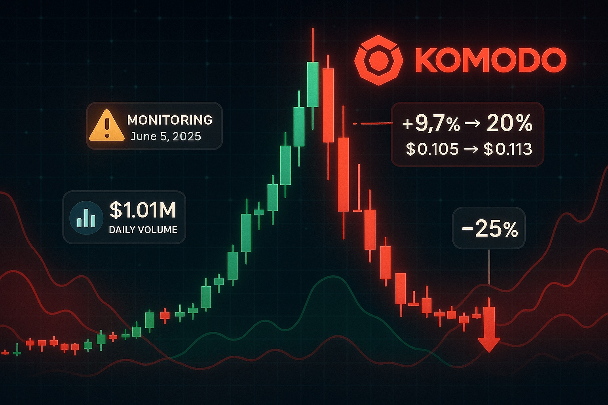

Komodo Price Prediction for End of 2025: In-Depth Analysis and Insights
The information in this article is provided for educational purposes only and is not investment advice. Cryptocurrency investments carry risks.
Introduction
As of August 21, 2025, 12:34 AM EEST, Komodo (KMD) is trading at approximately $0.03406, with a market capitalization of around $4.75 million, ranking it #932 among cryptocurrencies. Launched in September 2016 as a fork of Zcash, Komodo is an open-source blockchain platform focused on privacy, scalability, and decentralized exchange (DEX) solutions through its atomic swap technology and Komodo Wallet. Its Delayed Proof-of-Work (dPoW) system, backed by Litecoin notarizations, secures over 30 blockchains, offering robust protection against 51% attacks. This article provides a comprehensive analysis of KMD’s price outlook for the end of 2025, exploring bullish and bearish scenarios, key growth drivers, and risks based on current market trends and ecosystem developments.

Current Situation
As of August 21, 2025, Komodo’s price is approximately $0.03406, up 23.26% over the past 24 hours but down 19% from its weekly high of $0.04, with a market cap of $4.75 million. The Fear & Greed Index at 24.47 (Extreme Fear) reflects cautious sentiment, while technical indicators like an RSI of 25.13 and a bearish 200-day SMA ($0.21) suggest oversold conditions but limited momentum. Recent X posts highlight Binance’s impending KMD withdrawal deadline (September 3, 2025), urging users to move funds to Komodo Wallet, potentially impacting liquidity. Trading volume over the last 24 hours is $610,873, a 342.96K increase from the prior day, signaling renewed interest.
Price Predictions for End of 2025
Analyst forecasts for Komodo by December 2025 vary widely due to its niche focus and market volatility. Bearish projections, such as WalletInvestor’s $0.07967–$0.08963 and TradingBeast’s $0, cite ongoing bearish trends and low market cap susceptibility to manipulation. Moderate estimates from CoinCodex and MEXC suggest KMD trading between $0.02946 and $0.12140169, averaging $0.11660092, driven by steady DEX adoption. Bullish forecasts include Changelly’s $0.76902309–$0.89871012, CoinLore’s $11.76, and Crypto.ro’s $8.21, with highly optimistic scenarios projecting up to $11.76 if an altcoin season boosts adoption. These projections reflect KMD’s speculative potential but highlight significant uncertainty.
Factors Driving Price Growth
- Atomic Swap Technology: Komodo’s pioneering DEX with peer-to-peer atomic swaps supports 99% of cryptocurrencies, enhancing KMD’s utility.
- Komodo Wallet: The non-custodial wallet, integrating DEX and crypto bridge, drives demand, as noted in CoinMarketCap’s overview.
- dPoW Security: Securing over 30 blockchains with Litecoin-backed notarizations strengthens Komodo’s reputation for reliability.
- Market Sentiment: A projected altcoin season in Q2 2025 could propel KMD’s price, as per Changelly’s analysis.
- Community and Development: Active engagement on X and ongoing platform upgrades, like Komodo Smart Chains, boost investor confidence.
Risks and Downward Factors
- Market Volatility: KMD’s low market cap ($4.75M) makes it prone to whale manipulation, as noted in CoinDataFlow’s analysis.
- Exchange Delistings: Binance’s withdrawal deadline (September 3, 2025) may reduce liquidity and accessibility, per X posts.
- Limited Mainstream Adoption: Komodo’s niche focus on privacy and DEX may limit its appeal compared to larger layer-1 blockchains.
- Competition: Rival platforms like Cosmos and Polkadot may overshadow Komodo’s multi-chain solutions.
Volatility Analysis
From July to August 2025, KMD’s price rose from $0.03 to $0.03406, a 15% gain with 71.81% volatility, reflecting its sensitivity to market shifts. Technical indicators, including a bearish 200-day SMA ($0.21) and oversold RSI (25.13), suggest potential for a rebound if volume exceeds $1 million, per DigitalCoinPrice. X posts note increased trading activity, supporting short-term optimism. CoinCodex projects a 0.68% rise to $0.029813 by September 17, 2025, with resistance at $0.1844 and support at $0.029559. A Q2 2025 altcoin season could drive KMD toward $0.12140169, but failure to hold $0.029559 risks a drop to $0.01.
Conclusion
By the end of 2025, Komodo’s price is projected to range between $0.02946 and $0.89871012, with optimistic scenarios suggesting up to $11.76 if atomic swap adoption and altcoin market trends align. Growth factors like Komodo Wallet, dPoW security, and community engagement support bullish potential, but risks such as volatility, exchange delistings, limited adoption, and competition warrant caution. Investors should conduct thorough research and practice risk management before investing in Komodo.